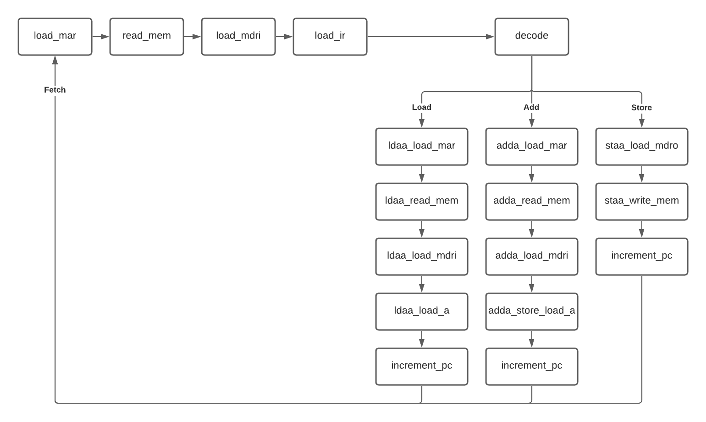

Design of a Simple CPU
Introduction
The final project of the Introduction to Digital Logic Labratory was to design a simple CPU using VHDL. The parameters of the CPU were set for it to have three op codes and 32 bytes of memory. The final product was implemented on the Intel DE-10 Lite board. The full final report can be read here.
How It Works
How the CPU works can be visualized by the finite state machine diagram below. The CPU fetches the first instruction from memory by loading the first address into the memory address register (MAR). The CPU fetches the data at the address that was loaded into the MAR and loads it into the memory data register in (MDRI). The op code from the data (three most significant bits) is decoded by the control unit (CU)
The CU enables certain components of the CPU based on the op code. The three op codes that the CPU has are LOADA, ADDA, STOREA. The LOADA operation takes the value of a specified address and loads it into the accumulator. ADDA is the operation that adds the value at a specified address to the value in the accumulator by bitwise additon. STOREA stores the value of the accumulator into memory at a specified address.
Block Diagram
All of the components of the CPU and their connections are summarized in the block diagram seen below. Each connection has the size of input in bits.

Results
The results can be viewed by either simulating the waveforms in Quartus Prime or loading the CPU code onto the Intel DE-10 Lite FPGA device.
The first 500 ns of the simulation can be seen in the image below. The accumulator value is first waveform seen displayed in decimal. For this demonstration the following commands were coded into the RAM:
- LOADA at address 5 (value of 6)
- ADDA at address 3 (value of 7)
- STOREA at address 7
- LOADA at address 7 (value of 13)
A picture of the CPU implemented on the DE-10 Lite board can be seen below. The binary value of the accumulator was decoded to display it onto the seven-segment display on the board. The right-most switch acted as the clock, which triggers on a negative edge.
The final version of the code featured eight operations, mixing between the three different op codes.
This CPU project has the opportunity to expand. Such as increasing the memory size, adding another ALU and accumulator, and coding more op codes for the ALU.